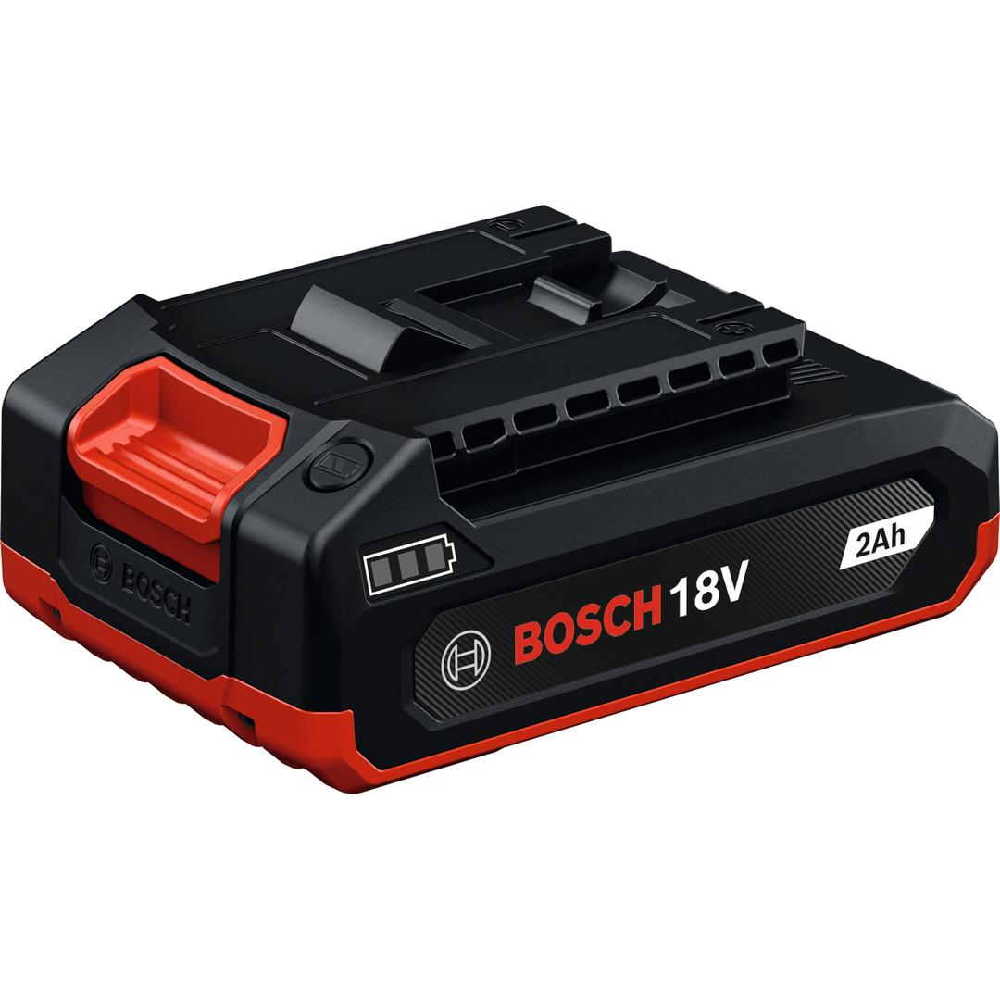

1600A03K19

| Battery dimensions (width x length x height) |
75 x 114 x 43 mm |
| Battery capacity |
2.0 Ah |
Compact and lightweight 18V 2.0Ah battery pack
The GBA18V-20 is the most compact and lightweight battery, delivering up to 550W of maximum power (based on internal lab testing; instantaneous maximum power with a fully charged new battery). Its compact design ensures greater comfort when working in all positions, especially overhead. With a robust build, this battery is more durable and can withstand drops and harsh working conditions.
The GBA18V-20 is a lithium-ion battery pack featuring a 3-LED fuel gauge that displays the state of charge. Compatible with the Bosch Professional 18V system and the multi-brand battery alliance AMPShare.